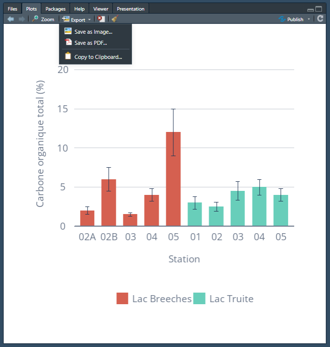
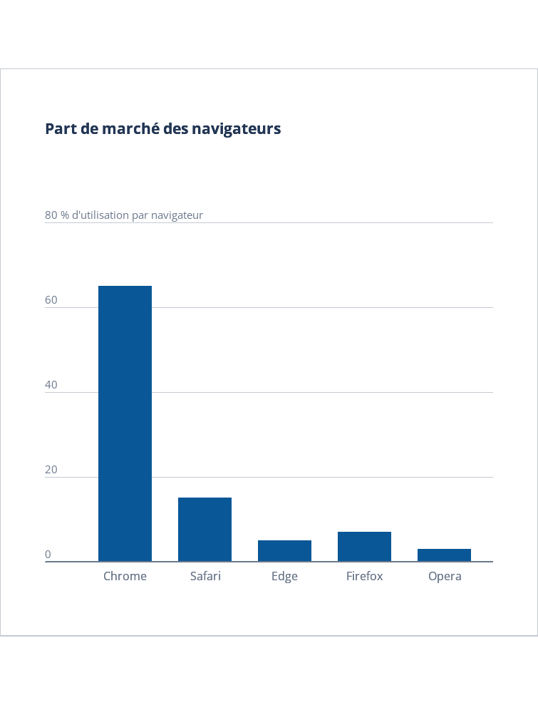
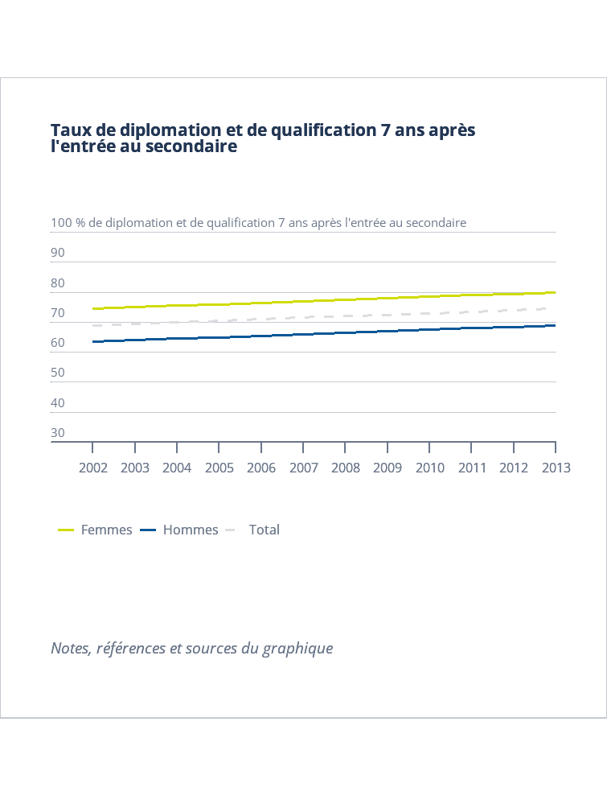
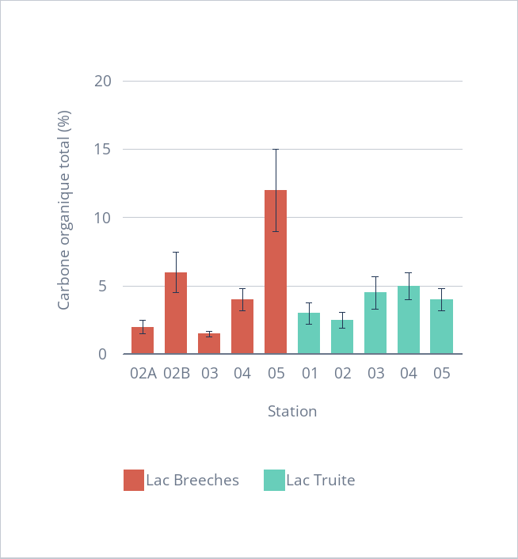
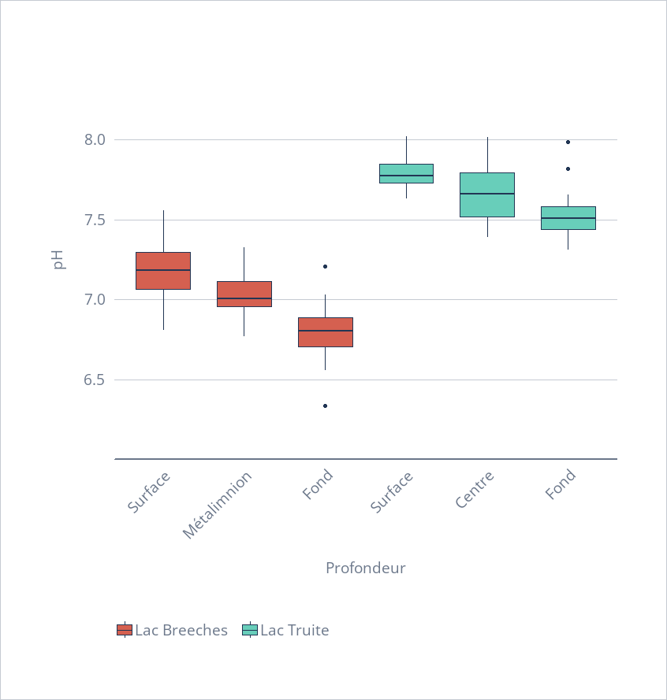
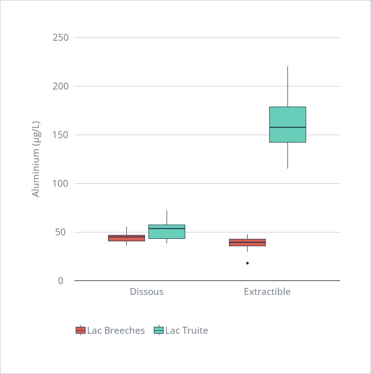
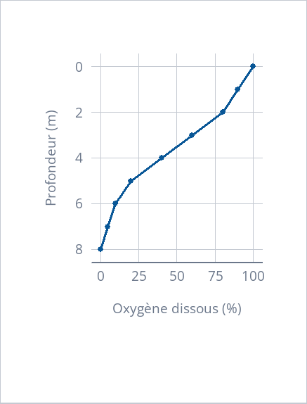

Chapitre 14 Annexe : Exemples REPREX
14.1 Exporter un graphique depuis le volet Plots dans RStudio
Pour exporter un graphique affiché dans le volet Plots de RStudio, suivez ces étapes :
Créer votre graphique : Exécutez votre code pour afficher le graphique dans le volet
Plots.Exporter le graphique :
Sauvegarder comme image :
Cliquez sur le bouton
Exporten haut à droite du voletPlots.Sélectionnez
Save As Image.Choisissez le format (PNG, JPEG, etc.), le nom de fichier, la résolution (DPI), et l’emplacement de sauvegarde.
Cliquez sur
Savepour enregistrer l’image.
Copier dans le presse-papier :
Cliquez sur
Export.Sélectionnez
Copy to Clipboard.Collez ensuite le graphique directement dans un document (Word, PowerPoint, etc.) en utilisant la commande de collage (Ctrl + V).

NB. Il n’existe pas de commande R pour reproduire exactement ces actions manuelles. Toutefois, vous pouvez utiliser la fonction ggsave() pour automatiser l’enregistrement d’un graphique dans un script, mais cela n’offre pas les options visuelles du volet Plots.
14.2 Comme design.ca
14.2.1 Diagramme à bandes
Voici des exemples reproductibles qui montrent comment structurer divers graphiques en suivant à la lettre des normes de quebec.ca.
# REPREX - Graphique des parts de marché des navigateurs avec ggplot2 et grid
# Ce script explique en détail comment construire un graphique avec des normes spécifiques de présentation.
# Importer les librairies nécessaires --------------------------------------------------------
# ggplot2 : pour créer des graphiques basés sur les principes de la "Grammaire des graphiques".
# grid et gridExtra : pour manipuler l'arrangement des éléments graphiques et ajouter des marges externes.
# showtext et sysfonts : pour utiliser des polices personnalisées (Google Fonts) dans les graphiques.
library(ggplot2) # Création de graphiques
library(grid) # Manipulation d'éléments graphiques (grille, texte)
library(gridExtra) # Arranger plusieurs éléments graphiques dans une grille
library(showtext) # Utilisation de polices Google Fonts
library(sysfonts) # Charger des polices supplémentaires
# Charger la police Google Open Sans ---------------------------------------------------------
# Nous utilisons ici la police "Open Sans" de Google Fonts pour le texte.
# Cette police est populaire et adaptée aux graphiques formels.
font_add_google("Open Sans", "open-sans")
showtext_auto() # Activer showtext pour que la police soit appliquée aux graphiques
# Fonction de conversion pixels -> points ----------------------------------------------------
# Cette fonction est utilisée pour convertir des pixels en points, car certaines marges sont exprimées en points.
# Dans R, 1 point correspond à 0,75 pixel.
px_to_pt <- function(px) {
# Conversion de pixels en points (1 point = 0.75 pixel)
return(px / 0.75)
}
# Créer des données fictives ---------------------------------------------------------------
# Nous créons ici un jeu de données factice qui montre la part de marché de différents navigateurs web.
# Les données sont organisées dans un tableau de données (data frame), et l'axe des X est ordonné pour correspondre aux navigateurs.
data <- data.frame(
navigateur = factor(c("Chrome", "Safari", "Edge", "Firefox", "Opera"),
levels = c("Chrome", "Safari", "Edge", "Firefox", "Opera")), # Ordre spécifique pour l'axe X
part_marche = c(65, 15, 5, 7, 3) # Parts de marché respectives
)
# Créer le graphique avec ggplot2 ---------------------------------------------------------
# Nous utilisons ggplot2 pour créer un graphique en barres. Chaque navigateur est représenté par une barre dont la hauteur reflète sa part de marché.
p <- ggplot(data, aes(x = navigateur, y = part_marche)) +
geom_bar(stat = "identity", fill = "#095797", width = 0.67) + # Création des barres avec une couleur spécifique
labs(
title = "Part de marché des navigateurs", # Titre du graphique
x = NULL, # Retirer le titre de l'axe X (pas nécessaire ici)
y = NULL # Retirer le titre de l'axe Y (pas nécessaire ici)
) +
# Échelle de l'axe Y avec des valeurs entre 0 et 100, sans espace en bas
scale_y_continuous(
expand = c(0, 0), # Retirer l'espace en bas
limits = c(0, 100), # Limite de 0 à 100 pour correspondre à des pourcentages
breaks = c(0, 20, 40, 60, 80) # Position des repères sur l'axe Y
) +
# Thème du graphique
theme_void() + # Commence avec un thème vide pour tout personnaliser
theme(
# Définition des marges autour du graphique (exprimées en points après conversion)
plot.margin = margin(t = px_to_pt(0), r = px_to_pt(40), b = px_to_pt(0), l = px_to_pt(40), unit = "pt"),
# Fond et bordures du graphique
plot.background = element_rect(fill = NA, colour = "#c5cad2", linewidth = 1), # Bordure grise autour du graphique
panel.spacing.y = unit(px_to_pt(48), "pt"), # Espace entre le contenu du graphique et la bordure
# Fond du panneau contenant le graphique
panel.background = element_rect(fill = "#FFFFFF", colour = "#FFFFFF"), # Fond blanc du panneau
panel.grid.major.y = element_line(linewidth = 0.5, colour = "#C5CAD2"), # Ligne de grille pour l'axe Y
# Axe des X
axis.line.x = element_line(linewidth = 1, colour = "#6B778A"), # Ligne de l'axe des X avec une couleur spécifique
axis.text.x = element_text(
family = "open-sans", size = 12, color = "#6b778a", # Style des étiquettes des navigateurs
margin = margin(t = px_to_pt(8), b = px_to_pt(48), unit = "pt"), # Marges autour des étiquettes
hjust = 0.5 # Centrer les étiquettes sous chaque barre
),
# Titre du graphique
plot.title = element_text(
family = "open-sans", face = "bold", size = 16, color = "#223654", # Style du titre
margin = margin(t = px_to_pt(48), unit = "pt") # Espace au-dessus du titre
)
) +
# Ajout de textes supplémentaires pour l'axe Y (positions fixes)
annotate("text", x = 0, y = 80, label = "80 % d'utilisation par navigateur",
hjust = 0, vjust = -0.5, size = 4, family = "open-sans", color = "#6b778a") +
annotate("text", x = 0, y = 60, label = "60",
hjust = 0, vjust = -0.5, size = 4, family = "open-sans", color = "#6b778a") +
annotate("text", x = 0, y = 40, label = "40",
hjust = 0, vjust = -0.5, size = 4, family = "open-sans", color = "#6b778a") +
annotate("text", x = 0, y = 20, label = "20",
hjust = 0, vjust = -0.5, size = 4, family = "open-sans", color = "#6b778a") +
annotate("text", x = 0, y = 0, label = "0",
hjust = 0, vjust = -0.5, size = 4, family = "open-sans", color = "#6b778a")
# Utilisation de grid pour ajuster les marges externes autour du graphique ----------------
# Ici, nous ajoutons une marge externe au graphique pour créer un espace supplémentaire en haut et en bas.
# Cela est utile pour contrôler l'espacement dans des documents ou des présentations.
grid.newpage() # Crée une nouvelle page graphique avant de dessiner le graphique avec des marges supplémentaires
# Ajouter des marges externes autour du graphique ----------------------------------------
grid.draw(gridExtra::grid.arrange(
p, # Le graphique ggplot que nous avons créé
top = textGrob(" ", gp = gpar(fontsize = px_to_pt(72))), # Marge en haut de 72 pixels convertis en points
bottom = textGrob(" ", gp = gpar(fontsize = px_to_pt(72))) # Marge en bas de 72 pixels convertis en points
))
14.2.2 Diagramme linéraire
# Load necessary libraries
library(ggplot2)
library(dplyr)
library(tidyr)
# Charger les librairies nécessaires
library(ggplot2)
px_to_pt <- function(px) {
# Conversion de pixels en points (1 point = 0.75 pixel)
return(px / 0.75)
}
# Créer le jeu de données
data <- data.frame(
year = 2002:2013,
Femmes = c(74.5, 75.0, 75.5, 76.0, 76.5, 77.0, 77.5, 78.0, 78.5, 79.0, 79.5, 80.0),
Hommes = c(63.5, 64.0, 64.5, 65.0, 65.5, 66.0, 66.5, 67.0, 67.5, 68.0, 68.5, 69.0),
Total = c(69.0, 69.5, 70.0, 70.5, 71.0, 71.5, 72.0, 72.5, 73.0, 73.5, 74.0, 74.5)
)
# Créer le graphique
p <- ggplot(data) +
geom_line(aes(x = year, y = Femmes, color = "Femmes", linetype = "Femmes"), linewidth = 1.2) +
geom_line(aes(x = year, y = Hommes, color = "Hommes", linetype = "Hommes"), linewidth = 1.2) +
geom_line(aes(x = year, y = Total, color = "Total", linetype = "Total"), linewidth = 1.2) +
scale_color_manual(values = c("Femmes" = "#D0DC03", "Hommes" = "#095797", "Total" = "#DEDEE1")) +
scale_linetype_manual(values = c("Femmes" = "solid", "Hommes" = "solid", "Total" = "dashed")) +
scale_y_continuous(expand = c(0, 0),# Retirer l'espace en bas
limits = c(30,110),
breaks = c(30, 40,50, 60,70, 80, 90, 100)) + # Positions des labels
scale_x_continuous(breaks = c(2002:2013),
limits = c(2001,2013),
expand = c(0,0)
) +
labs(
title = "Taux de diplomation et de qualification 7 ans après \nl'entrée au secondaire",
x = "",
y = "",
caption = "Notes, références et sources du graphique",
color = "",
linetype = ""
) +
theme_void() +
theme(
plot.margin = margin(t = px_to_pt(0), r = px_to_pt(40), b = px_to_pt(0), l = px_to_pt(40), unit = "pt"),
panel.background = element_rect(fill = "#FFFFFF", colour = "#FFFFFF"),
plot.background = element_rect(fill = NA, colour = "#c5cad2", linewidth = 1), # Bordure grise autour du graphique
legend.position = "bottom",
legend.justification = c(0, 0), # Aligne la légende à gauche
legend.box.just = "left", # Assure que la boîte de la légende est à gauche
panel.grid.minor.x = element_blank(),
panel.grid.major.x = element_blank(),
panel.grid.minor.y = element_blank(),
panel.spacing.y = unit(px_to_pt(48), "pt"), # Espace entre le contenu du graphique et la bordure
panel.grid.major.y = element_line(linewidth = 0.5, colour = "#C5CAD2"), #CSS de la grille de fond border: 0.5px solid #c5cad2;
axis.line.x = element_line(linewidth = 1, colour = "#6B778A"), # Ligne de l'axe des X avec une couleur spécifique
plot.title = element_text(
family = "open-sans", face = "bold", size = 16, color = "#223654",
margin = margin(t = 48, r = 0, b = 48, l = 0, unit = "pt")
),
plot.caption = element_text(
family = "open-sans", face = "italic", size = 14, color = "#6b778a",
margin = margin(t = px_to_pt(80), r = px_to_pt(40), b = px_to_pt(48), l = 0 , unit = "pt"), hjust = 0
),
axis.ticks = element_line(linewidth = 1, color="#6B778A") ,
axis.ticks.length.x = unit(px_to_pt(8), "pt"),
axis.text.x = element_text(family = "open-sans", size = 12, color = "#6b778a",
margin = margin(t = px_to_pt(7), b = px_to_pt(32), unit = "pt"), # Marges autour des étiquettes
hjust = 0.5 # Alignement des libellés sous chaque barre
),
legend.text = element_text(family = "open-sans", size = 12, color = "#6b778a",
),
legend.key.size = unit(px_to_pt(16), "pt"),
legend.margin = margin(t = 0, b = 0), # Réduit la marge au-dessus de la légende
) +
annotate("text", x = 2001, y = 100, label = "100 % de diplomation et de qualification 7 ans après l'entrée au secondaire",
hjust = 0, vjust = -0.6, size = 4, family = "open-sans", color = "#6b778a") +
annotate("text", x = 2001, y = 90, label = "90",
hjust = 0, vjust = -0.6, size = 4, family = "open-sans", color = "#6b778a") +
annotate("text", x = 2001, y = 80, label = "80",
hjust = 0, vjust = -0.6, size = 4, family = "open-sans", color = "#6b778a") +
annotate("text", x = 2001, y = 70, label = "70",
hjust = 0, vjust = -0.6, size = 4, family = "open-sans", color = "#6b778a") +
annotate("text", x = 2001, y = 60, label = "60",
hjust = 0, vjust = -0.6, size = 4, family = "open-sans", color = "#6b778a") +
annotate("text", x = 2001, y = 30, label = "30",
hjust = 0, vjust = -0.6, size = 4, family = "open-sans", color = "#6b778a") +
annotate("text", x = 2001, y = 40, label = "40",
hjust = 0, vjust = -0.6, size = 4, family = "open-sans", color = "#6b778a") +
annotate("text", x = 2001, y = 50, label = "50",
hjust = 0, vjust = -0.6, size = 4, family = "open-sans", color = "#6b778a")
p
# Utilisation de grid pour ajuster les marges externes autour du graphique ----------------
# Ici, nous ajoutons une marge externe au graphique pour créer un espace supplémentaire en haut et en bas.
# Cela est utile pour contrôler l'espacement dans des documents ou des présentations.
grid.newpage() # Crée une nouvelle page graphique avant de dessiner le graphique avec des marges supplémentaires
# Ajouter des marges externes autour du graphique ----------------------------------------
grid.draw(gridExtra::grid.arrange(
p, # Le graphique ggplot que nous avons créé
top = textGrob(" ", gp = gpar(fontsize = px_to_pt(72))), # Marge en haut de 72 pixels convertis en points
bottom = textGrob(" ", gp = gpar(fontsize = px_to_pt(72))) # Marge en bas de 72 pixels convertis en points
))
14.3 Pour rapport gouvernemental
Voici maintenant des exemples reproductibles qui montrent comment structurer divers graphiques en ayant des normes de présentation cohérentes avec l’identité visuelle du gouvernement, tout en étant utilisable sur R de manière intuitive.
14.3.1 Diagramme à bandes
# Importer les bibliothèques nécessaires
library(ggplot2) # Pour créer des graphiques avec ggplot2
library(grid) # Pour manipuler des éléments graphiques (comme les marges, les lignes)
library(showtext) # Pour utiliser des polices Google Fonts dans les graphiques
library(sysfonts) # Pour charger des polices supplémentaires
# Charger la police Google Open Sans ---------------------------------------------------------
# Ici, nous utilisons la police "Open Sans" de Google Fonts, qui est bien adaptée pour un rendu clair
# et propre dans les graphiques formels.
font_add_google("Open Sans", "open-sans")
showtext_auto() # Activer showtext pour que la police soit correctement rendue dans les graphiques
# Fonction utilitaire pour convertir des pixels en points ------------------------------------
# Cette fonction convertit des pixels en points, car ggplot fonctionne souvent avec des unités
# en points. (1 point = 0.75 pixel).
px_to_pt <- function(px) {
return(px / 0.75)
}
# Création d'un jeu de données simulé --------------------------------------------------------
# Ce jeu de données est utilisé pour reproduire la figure avec des mesures de carbone organique
# par station.
set.seed(123) # Fixer une graine pour garantir la reproductibilité des résultats
# Définir les noms des stations
stations <- c("Bree02A", "Bree02B", "Bree03", "Bree04", "Bree05",
"Tru01", "Tru02", "Tru03", "Tru04", "Tru05")
# Définir les valeurs de carbone organique total (%)
carbone_organique <- c(2, 6, 1.5, 4, 12,
3, 2.5, 4.5, 5, 4)
# Ajouter des barres d'erreur simulées (écart-type) pour chaque mesure
erreur <- c(0.5, 1.5, 0.2, 0.8, 3.0,
0.8, 0.6, 1.2, 1.0, 0.8)
# Localisation des stations (lac Bree ou lac Truite)
localisation <- rep(c("Bree", "Tru"), each = 5)
# Création du data.frame avec les colonnes nécessaires
data <- data.frame(Station = stations,
Carbone_organique = carbone_organique,
Erreur = erreur,
Lac = localisation)
# Afficher les premières lignes du jeu de données pour vérifier sa structure
head(data)
# Création du thème personnalisé pour le graphique ------------------------------------------
# Nous créons un thème personnalisé pour harmoniser les éléments graphiques du diagramme.
custom_theme <- theme_void() + # Commence par un thème vide sans éléments par défaut
theme(
# Marges autour du graphique (haut, droite, bas, gauche) en points
plot.margin = margin(t = px_to_pt(48), r = px_to_pt(40), b = px_to_pt(48), l = px_to_pt(40), unit = "pt"),
# Définir un fond blanc avec une bordure grise autour du graphique
plot.background = element_rect(fill = "#FFFFFF", colour = "#c5cad2", linewidth = 1),
# Fond blanc pour le panneau du graphique
panel.background = element_rect(fill = "#FFFFFF", colour = "#FFFFFF"),
# Grille pour l'axe Y en ligne fine grise
panel.grid.major.y = element_line(linewidth = 0.5, colour = "#C5CAD2"),
# Ligne de l'axe X avec une couleur grise
axis.line.x = element_line(linewidth = 1, colour = "#6B778A"),
# Position de la légende en bas du graphique
legend.position = "bottom",
legend.justification = c(0, 0), # Alignement à gauche
# Style des étiquettes de l'axe des X
axis.text.x = element_text(
family = "open-sans", size = 14, color = "#6b778a", # Police Open Sans, couleur grise
margin = margin(t = px_to_pt(8), b = px_to_pt(16), unit = "pt"), # Marges autour des étiquettes
hjust = 0.5 # Centrer les étiquettes sous chaque barre
),
# Style des étiquettes de l'axe des Y
axis.text.y = element_text(
family = "open-sans", size = 14, color = "#6b778a", # Police Open Sans, couleur grise
margin = margin(r = px_to_pt(8), l = px_to_pt(16), unit = "pt"), # Marges autour des étiquettes
hjust = 0.5 # Centrer les étiquettes de l'axe Y
),
# Style du titre de l'axe des X
axis.title.x = element_text(
family = "open-sans", size = 14, color = "#6b778a", # Police Open Sans
margin = margin(b = px_to_pt(32), unit = "pt"), # Marges sous le titre
hjust = 0.5 # Centrer le titre
),
# Style du titre de l'axe des Y
axis.title.y = element_text(
family = "open-sans", size = 14, color = "#6b778a", angle = 90, # Angle de 90° pour le titre de l'axe Y
hjust = 0.5 # Centrer verticalement
),
# Style de la légende (sans titre et police Open Sans)
legend.title = element_blank(),
legend.text = element_text(family = "open-sans", size = 14, color = "#6b778a",
margin = margin(r = px_to_pt(8)) # Marge à droite pour espacer les éléments
),
legend.key.size = unit(px_to_pt(16), "pt") # Taille des éléments de la légende
)
# Générer le graphique avec ggplot2 ---------------------------------------------------------
ggplot(data, aes(x = Station, y = Carbone_organique, fill = Lac)) + # Variable x: Station, y: Carbone organique
geom_bar(stat = "identity", position = "dodge", width = 0.67) + # Barres pour chaque station
geom_errorbar(aes(ymin = Carbone_organique - Erreur, ymax = Carbone_organique + Erreur),
width = 0.2, color = "#223654") + # Ajout des barres d'erreur
labs(x = "Station", y = "Carbone organique total (%)") + # Labels pour les axes
scale_y_continuous(
limits = c(0, 21), # Limiter l'axe des Y de 0 à 21
breaks = c(0, 5, 10, 15, 20), # Intervalles des graduations de l'axe Y
expand = c(0, 0) # Retirer l'espace vide en bas de l'axe
) +
scale_x_discrete(labels = gsub("(Bree|Tru)", "", stations)) + # Enlever "Bree" et "Tru" des étiquettes de l'axe X
scale_fill_manual(
values = c("Bree" = "#D56050", "Tru" = "#68CEBA"), # Définir les couleurs pour les lacs Bree et Tru
labels = c("Bree" = "Lac Breeches", "Tru" = "Lac Truite") # Modifier les labels de la légende
) +
custom_theme # Appliquer le thème personnalisé
14.3.2 Diagramme à moustaches
# Importer les bibliothèques nécessaires
library(ggplot2) # Pour créer des graphiques avec ggplot2
library(grid) # Pour manipuler des éléments graphiques (comme les marges, les lignes)
library(showtext) # Pour utiliser des polices Google Fonts dans les graphiques
library(sysfonts) # Pour charger des polices supplémentaires
# Charger la police Google Open Sans ---------------------------------------------------------
# Ici, nous utilisons la police "Open Sans" de Google Fonts, qui est bien adaptée pour un rendu clair
# et propre dans les graphiques formels.
font_add_google("Open Sans", "open-sans")
showtext_auto() # Activer showtext pour que la police soit correctement rendue dans les graphiques
# Fonction utilitaire pour convertir des pixels en points ------------------------------------
# Cette fonction convertit des pixels en points, car ggplot fonctionne souvent avec des unités
# en points. (1 point = 0.75 pixel).
px_to_pt <- function(px) {
return(px / 0.75)
}
# Création d'un jeu de données simulé --------------------------------------------------------
# Ce jeu de données est utilisé pour reproduire la figure avec des mesures de carbone organique
# par station.
set.seed(123) # Fixer une graine pour garantir la reproductibilité des résultats
prof_label <- c("BreeSurface", "BreeMétalimnion", "BreeFond", "TruSurface", "TruCentre", "TruFond")
# Profondeur des mesures (exemple : Surface, Métalimnion, Fond, etc.)
profondeur <- factor(rep(prof_label, each = 30))
# Réorganiser les niveaux de 'Profondeur' dans l'ordre souhaité
profondeur <- factor(profondeur, prof_label)
# Groupe de localisation (exemple : Lac A, Lac B) correspondant aux couleurs
localisation <- rep(c("Bree", "Tru"), each = 90)
# pH simulé en fonction de la profondeur et du lac (avec différentes moyennes et écarts-types)
pH <- c(
rnorm(30, mean = 7.2, sd = 0.2), # Surface Lac A
rnorm(30, mean = 7.0, sd = 0.15), # Métalimnion Lac A
rnorm(30, mean = 6.8, sd = 0.2), # Fond Lac A
rnorm(30, mean = 7.8, sd = 0.1), # Surface Lac B
rnorm(30, mean = 7.7, sd = 0.15), # Centre Lac B
rnorm(30, mean = 7.5, sd = 0.15) # Fond Lac B
)
# Création du data.frame
data <- data.frame(Profondeur = profondeur, Localisation = localisation, pH = pH)
# Affichage des premières lignes pour vérifier le jeu de données
head(data)
# Création du thème personnalisé pour le graphique ------------------------------------------
# Nous créons un thème personnalisé pour harmoniser les éléments graphiques du diagramme.
custom_theme <- theme_void() + # Commence par un thème vide sans éléments par défaut
theme(
# Marges autour du graphique (haut, droite, bas, gauche) en points
plot.margin = margin(t = px_to_pt(48), r = px_to_pt(40), b = px_to_pt(48), l = px_to_pt(40), unit = "pt"),
# Définir un fond blanc avec une bordure grise autour du graphique
plot.background = element_rect(fill = "#FFFFFF", colour = "#c5cad2", linewidth = 1),
# Fond blanc pour le panneau du graphique
panel.background = element_rect(fill = "#FFFFFF", colour = "#FFFFFF"),
# Grille pour l'axe Y en ligne fine grise
panel.grid.major.y = element_line(linewidth = 0.5, colour = "#C5CAD2"),
# Ligne de l'axe X avec une couleur grise
axis.line.x = element_line(linewidth = 1, colour = "#6B778A"),
# Position de la légende en bas du graphique
legend.position = "bottom",
legend.justification = c(0, 0), # Alignement à gauche
# Style des étiquettes de l'axe des X
axis.text.x = element_text(
family = "open-sans", size = 14, color = "#6b778a", # Police Open Sans, couleur grise
margin = margin(t = px_to_pt(8), b = px_to_pt(16), unit = "pt"), # Marges autour des étiquettes
angle = 45, hjust = 1, vjust = 1
),
# Style des étiquettes de l'axe des Y
axis.text.y = element_text(
family = "open-sans", size = 14, color = "#6b778a", # Police Open Sans, couleur grise
margin = margin(r = px_to_pt(8), l = px_to_pt(16), unit = "pt"), # Marges autour des étiquettes
hjust = 0.5 # Centrer les étiquettes de l'axe Y
),
# Style du titre de l'axe des X
axis.title.x = element_text(
family = "open-sans", size = 14, color = "#6b778a", # Police Open Sans
margin = margin(b = px_to_pt(32), unit = "pt"), # Marges sous le titre
hjust = 0.5 # Centrer le titre
),
# Style du titre de l'axe des Y
axis.title.y = element_text(
family = "open-sans", size = 14, color = "#6b778a", angle = 90, # Angle de 90° pour le titre de l'axe Y
hjust = 0.5 # Centrer verticalement
),
# Style de la légende (sans titre et police Open Sans)
legend.title = element_blank(),
legend.text = element_text(family = "open-sans", size = 14, color = "#6b778a",
margin = margin(r = px_to_pt(8)) # Marge à droite pour espacer les éléments
),
legend.key.size = unit(px_to_pt(16), "pt") # Taille des éléments de la légende
)
# Générer le graphique avec ggplot2 ---------------------------------------------------------
ggplot(data, aes(x = Profondeur, y = pH, fill = Localisation)) +
geom_boxplot(width = 0.67, color = "#223654", outlier.color = "#223654") + # Couleur des lignes et des points aberrants
labs(x = "Profondeur", y = "pH") +
scale_x_discrete(labels = gsub("(Bree|Tru)", "", prof_label)) + # Enlever "Bree" et "Tru" des étiquettes de l'axe X
scale_fill_manual(
values = c("Bree" = "#D56050", "Tru" = "#68CEBA"), # Définir les couleurs pour les lacs Bree et Tru
labels = c("Bree" = "Lac Breeches", "Tru" = "Lac Truite") # Modifier les labels de la légende
) +
scale_y_continuous(
limits = c(6, 8.5), # Limiter l'axe des Y de 0 à 21
breaks = c(6.5, 7, 7.5, 8), # Intervalles des graduations de l'axe Y
expand = c(0, 0) # Retirer l'espace vide en bas de l'axe
) +
custom_theme
# Importer les bibliothèques nécessaires
library(ggplot2) # Pour créer des graphiques avec ggplot2
library(grid) # Pour manipuler des éléments graphiques (comme les marges, les lignes)
library(showtext) # Pour utiliser des polices Google Fonts dans les graphiques
library(sysfonts) # Pour charger des polices supplémentaires
# Charger la police Google Open Sans ---------------------------------------------------------
# Ici, nous utilisons la police "Open Sans" de Google Fonts, qui est bien adaptée pour un rendu clair
# et propre dans les graphiques formels.
font_add_google("Open Sans", "open-sans")
showtext_auto() # Activer showtext pour que la police soit correctement rendue dans les graphiques
# Fonction utilitaire pour convertir des pixels en points ------------------------------------
# Cette fonction convertit des pixels en points, car ggplot fonctionne souvent avec des unités
# en points. (1 point = 0.75 pixel).
px_to_pt <- function(px) {
return(px / 0.75)
}
# Création d'un jeu de données simulé --------------------------------------------------------
# Ce jeu de données est utilisé pour reproduire la figure avec des mesures de carbone organique
# par station.
set.seed(450) # Fixer une graine pour garantir la reproductibilité des résultats
# Variables : Lac, Type de mesure (Dissous ou Extractible), et Aluminium (µg/L)
lac <- rep(c("Bree", "Tru", "Bree", "Tru"), each = 30)
mesure <- rep(c("Dissous", "Extractible"), each = 60)
# Simuler des valeurs d'aluminium pour chaque combinaison Lac/Mesure
aluminium <- c(
rnorm(30, mean = 45, sd = 5),
# Breeches - Dissous (modifié pour un effet plus homogène)
rnorm(30, mean = 55, sd = 8),
# Truite - Dissous (modifié)
rnorm(30, mean = 40, sd = 6),
# Breeches - Extractible (modifié)
rnorm(30, mean = 160, sd = 25) # Truite - Extractible (modifié pour créer une plus grande variation)
)
# Création du data.frame
data <- data.frame(Lac = lac,
Mesure = mesure,
Aluminium = aluminium)
# Afficher les premières lignes pour vérifier
head(data)
# Création du thème personnalisé pour le graphique ------------------------------------------
# Nous créons un thème personnalisé pour harmoniser les éléments graphiques du diagramme.
custom_theme <- theme_void() + # Commence par un thème vide sans éléments par défaut
theme(
# Marges autour du graphique (haut, droite, bas, gauche) en points
plot.margin = margin(
t = px_to_pt(48),
r = px_to_pt(40),
b = px_to_pt(48),
l = px_to_pt(40),
unit = "pt"
),
# Définir un fond blanc avec une bordure grise autour du graphique
plot.background = element_rect(
fill = "#FFFFFF",
colour = "#c5cad2",
linewidth = 1
),
# Fond blanc pour le panneau du graphique
panel.background = element_rect(fill = "#FFFFFF", colour = "#FFFFFF"),
# Grille pour l'axe Y en ligne fine grise
panel.grid.major.y = element_line(linewidth = 0.5, colour = "#C5CAD2"),
# Ligne de l'axe X avec une couleur grise
axis.line.x = element_line(linewidth = 1, colour = "#6B778A"),
# Position de la légende en bas du graphique
legend.position = "bottom",
legend.justification = c(0, 0),
# Alignement à gauche
# Style des étiquettes de l'axe des X
axis.text.x = element_text(
family = "open-sans",
size = 14,
color = "#6b778a",
# Police Open Sans, couleur grise
margin = margin(t = px_to_pt(8), b = px_to_pt(32), unit = "pt"),
# Marges autour des étiquettes
hjust = 0.5 # Centrer les étiquettes sous chaque barre
),
# Style des étiquettes de l'axe des Y
axis.text.y = element_text(
family = "open-sans",
size = 14,
color = "#6b778a",
# Police Open Sans, couleur grise
margin = margin(r = px_to_pt(8), l = px_to_pt(16), unit = "pt"),
# Marges autour des étiquettes
hjust = 0.5 # Centrer les étiquettes de l'axe Y
),
# Style du titre de l'axe des Y
axis.title.y = element_text(
family = "open-sans",
size = 14,
color = "#6b778a",
angle = 90,
# Angle de 90° pour le titre de l'axe Y
hjust = 0.5 # Centrer verticalement
),
# Style de la légende (sans titre et police Open Sans)
legend.title = element_blank(),
legend.text = element_text(
family = "open-sans",
size = 14,
color = "#6b778a",
margin = margin(r = px_to_pt(8)) # Marge à droite pour espacer les éléments
),
legend.key.size = unit(px_to_pt(16), "pt") # Taille des éléments de la légende
)
# Générer le graphique avec ggplot2 ---------------------------------------------------------
ggplot(data, aes(x = Mesure, y = Aluminium, fill = Lac)) +
geom_boxplot(
width = 0.67,
color = "#223654",
outlier.color = "#223654"
) + # Couleur des lignes et points aberrants
labs(x = NULL, y = "Aluminium (µg/L)") +
scale_y_continuous(limits = c(0, 250), expand = c(0, 0)) + # Limites pour l'axe des Y
scale_fill_manual(
values = c("Bree" = "#D56050", "Tru" = "#68CEBA"),
# Définir les couleurs pour les lacs Bree et Tru
labels = c("Bree" = "Lac Breeches", "Tru" = "Lac Truite") # Modifier les labels de la légende
) +
custom_theme # Appliquer le thème personnalisé
### Diagramme linéaire# Importer les bibliothèques nécessaires
library(ggplot2) # Pour créer des graphiques avec ggplot2
library(grid) # Pour manipuler des éléments graphiques (comme les marges, les lignes)
library(showtext) # Pour utiliser des polices Google Fonts dans les graphiques
library(sysfonts) # Pour charger des polices supplémentaires
# Charger la police Google Open Sans ---------------------------------------------------------
# Ici, nous utilisons la police "Open Sans" de Google Fonts, qui est bien adaptée pour un rendu clair
# et propre dans les graphiques formels.
font_add_google("Open Sans", "open-sans")
showtext_auto() # Activer showtext pour que la police soit correctement rendue dans les graphiques
# Fonction utilitaire pour convertir des pixels en points ------------------------------------
# Cette fonction convertit des pixels en points, car ggplot fonctionne souvent avec des unités
# en points. (1 point = 0.75 pixel).
px_to_pt <- function(px) {
return(px / 0.75)
}
# Création d'un jeu de données simulé --------------------------------------------------------
donnees <- data.frame(
Profondeur = c(8, 7, 6, 5, 4, 3, 2, 1, 0),
Oxygene = c(0, 5, 10, 20, 40, 60, 80, 90, 100)
)
# Création du thème personnalisé pour le graphique ------------------------------------------
# Nous créons un thème personnalisé pour harmoniser les éléments graphiques du diagramme.
custom_theme <- theme_void() + # Commence par un thème vide sans éléments par défaut
theme(
# Marges autour du graphique (haut, droite, bas, gauche) en points
plot.margin = margin(t = px_to_pt(48), r = px_to_pt(40), b = px_to_pt(48), l = px_to_pt(40), unit = "pt"),
# Définir un fond blanc avec une bordure grise autour du graphique
plot.background = element_rect(fill = "#FFFFFF", colour = "#c5cad2", linewidth = 1),
# Fond blanc pour le panneau du graphique
panel.background = element_rect(fill = "#FFFFFF", colour = "#FFFFFF"),
# Grille pour l'axe Y en ligne fine grise
panel.grid.major.y = element_line(linewidth = 0.5, colour = "#C5CAD2"),
# Grille pour l'axe X en ligne fine grise
panel.grid.major.x = element_line(linewidth = 0.5, colour = "#C5CAD2"),
# Ligne de l'axe X avec une couleur grise
axis.line.x = element_line(linewidth = 1, colour = "#6B778A"),
# Position de la légende en bas du graphique
legend.position = "bottom",
legend.justification = c(0, 0), # Alignement à gauche
# Style des étiquettes de l'axe des X
axis.text.x = element_text(
family = "open-sans", size = 14, color = "#6b778a", # Police Open Sans, couleur grise
margin = margin(t = px_to_pt(8), b = px_to_pt(16), unit = "pt"), # Marges autour des étiquettes
hjust = 0.5, vjust = 1
),
# Style des étiquettes de l'axe des Y
axis.text.y = element_text(
family = "open-sans", size = 14, color = "#6b778a", # Police Open Sans, couleur grise
margin = margin(r = px_to_pt(8), l = px_to_pt(16), unit = "pt"), # Marges autour des étiquettes
hjust = 0.5 # Centrer les étiquettes de l'axe Y
),
# Style du titre de l'axe des X
axis.title.x = element_text(
family = "open-sans", size = 14, color = "#6b778a", # Police Open Sans
margin = margin(b = px_to_pt(32), unit = "pt"), # Marges sous le titre
hjust = 0.5 # Centrer le titre
),
# Style du titre de l'axe des Y
axis.title.y = element_text(
family = "open-sans", size = 14, color = "#6b778a", angle = 90, # Angle de 90° pour le titre de l'axe Y
hjust = 0.5 # Centrer verticalement
),
# Style de la légende (sans titre et police Open Sans)
legend.title = element_blank(),
legend.text = element_text(family = "open-sans", size = 14, color = "#6b778a",
margin = margin(r = px_to_pt(8)) # Marge à droite pour espacer les éléments
),
legend.key.size = unit(px_to_pt(16), "pt") # Taille des éléments de la légende
)
# Générer le graphique avec ggplot2 ---------------------------------------------------------
# Création du graphique
plot <- ggplot(donnees, aes(x = Oxygene, y = Profondeur)) +
geom_line(linewidth = 1.2, color = "#095797") +
geom_point(size = 3, color = "#095797") +
scale_y_reverse(expand = c(0.01, 0.5),# Retirer l'espace en bas
limits = c(8,-0),
breaks = c(8, 6, 4, 2, 0)
) +
labs(
x = "Oxygène dissous (%)",
y = "Profondeur (m)"
) +
scale_x_continuous(breaks = c(0,25,50,75,100),
limits = c(-5,105),
expand = c(0,1)
) +
custom_theme
# Affichage du graphique
plot